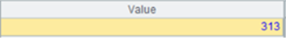
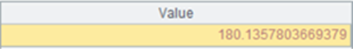

Description:
The external library function removes outliers from a sequence type numeric variable during modeling.
Syntax:
|
A.sert() |
During modeling, remove outliers from numeric variable A and return a binary sequence containing the handling result and removing process records Rec |
|
A.sert@r(Rec) |
During scoring, remove outliers from numeric variable A according to removing process records Rec |
Parameters:
|
A |
A sequence of numeric variable values |
|
Rec |
A sequence of removing process records |
Options:
|
@c |
Outliers are removed from the original data after execution |
Return value:
A sequence
Example:
|
|
A |
|
|
1 |
=T("D://house_prices_train.csv") |
|
|
2 |
=A1.(LotFrontage) |
A numeric variable |
|
3 |
=A2.max() |
 The maximum value in the original data |
|
4 |
=A2.sert@c() |
Remover outliers |
|
5 |
=A2.max() |
 The maximum value in the data where outliers are removed |